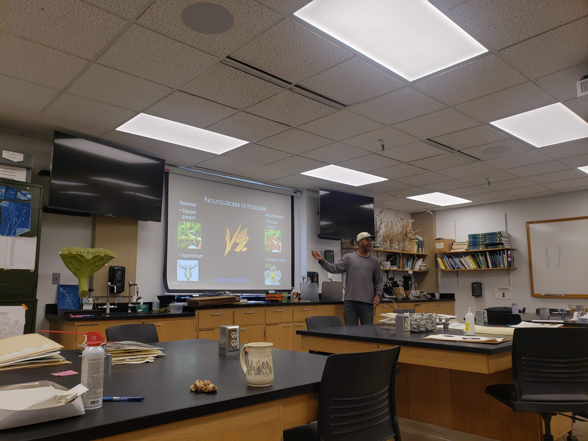
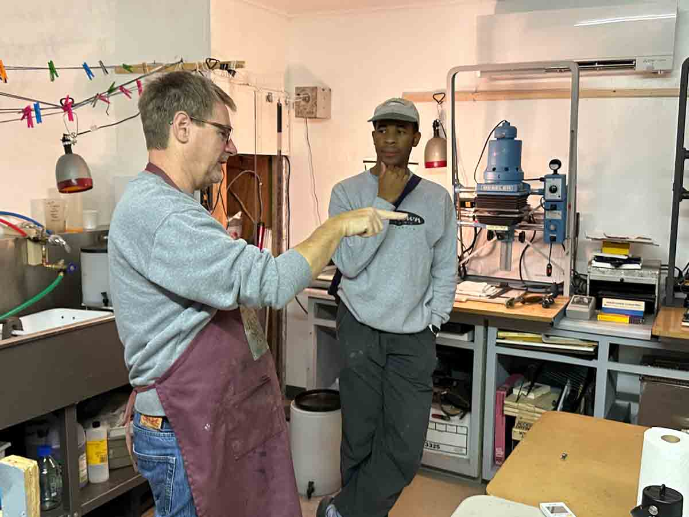

as co-manager of the image lab community darkroom at the soil factory, a place where scientists can be artists and artists can be scientists. I run montly workshops on how to process black and white film for folks of any age and of all skill levels

as an alumnus from a predominately undergraduate institution, I understand what strong higher education looks like. unfortunately, teaching is often not stressed, or seen as a lesser academic career path. I aim to create spaces in the botanical sciences that nurture connection, creativity, curiosity, and success in students — empowering the next generation of scientists to be mindful, collaborative, and courageous in their questioning.
I believe learning happens best in community, rooted in curiosity, the beginners mind and observation. My role as an instructor is similar to a gardner; to cultivate the conditions where curiosity can thrive
as co-manager of the image lab community darkroom at the soil factory, a place where scientists can be artists and artists can be scientists. I run montly workshops on how to process black and white film for folks of any age and of all skill levels
